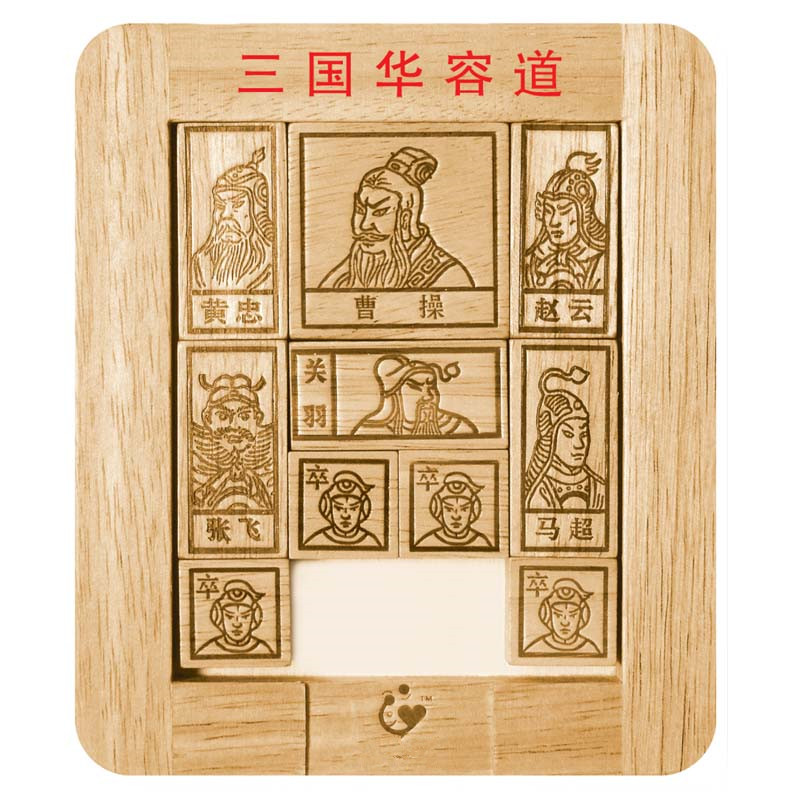

华容道游戏取自著名的三国故事，曹操在赤壁大战中被 刘备和孙权的“苦肉计”、“铁索连舟”打败，被迫退逃到华容道， 又遇上诸葛亮的伏兵，关羽为了报答曹操对他的恩情，明逼实让， 终于帮助曹操逃出了华容道。游戏就是依照“曹瞒兵败走华容，正与关公狭路逢。 只为当初恩义重，放开金锁走蛟龙”这一故事情节，但是这个游戏的起源， 却不是一般人认为的是“中国最古老的游戏之一”。实际上它的历史可能很短。 华容道的现在样式是1932年John Harold Fleming在英国申请的专利，并且还附上横刀立马的解法。
华容道就是依照“曹瞒兵败走华容，正与关公狭路逢。 只为当初恩义重，放开金锁走蛟龙”这一故事情节， 通过移动各个棋子，帮助曹操从初始位置移到棋盘最下方中部，从出口逃走。 不允许跨越棋子，还要设法用最少的步数把曹操移到出口。 曹操逃出华容道的最大障碍是关羽，关羽立马华容道， 一夫当关，万夫莫开。关羽与曹操当然是解开这一游戏的关键。 四个刘备军兵是最灵活的，也最容易对付，如何发挥他们的作用也要充分考虑周全。 “华容道”有一个带二十个小方格的棋盘，代表华容道。 棋盘下方有一个两方格边长的出口，是供曹操逃走的。 棋盘上共摆有十个大小不一样的棋子， 它们分别代表曹操、张飞、赵云、马超、黄忠和关羽，还有四个卒 。“华容道”有几十种布阵方法，如“横刀立马”、“近在咫尺”、 “过五关”、“水泄不通”、“小燕出巢”等等玩法。 棋盘上仅有两个小方格空着，玩法就是通过这两个空格移动棋子， 用最少的步数把曹操移出华容道。这个玩具引起过许多人的兴趣， 大家都力图把移动的步数减到最少。
兵不在多，四个则行。
将不在广，五虎则灵。
斯是游戏，唯吾闲情。
曹操跑得快，小兵追得勤。
通过鼠标点击方块上的箭头或利用键盘的方向键来移动方块。